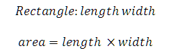
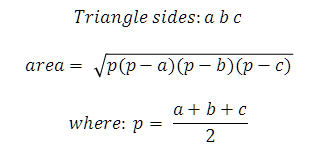

These exercises are designed to expand on the topics introduced in the Inheritance chapter of the Java Development training course.
You can attempt the exercises in any order but the later exercises tend to be more complex and require more time to complete. You are not expected to complete all the exercises in the time available. Just do as many as you can do, or want to do, and try to find time after the course has finished to return to complete these exercises. If you are unsure what to do, or need advice as you work through the exercises then please ask your instructor for additional information.
The purpose of these exercises is to work with class inheritance and polymorphic methods (overriding). These exercises should be attempted in the order they are given as you are building a simple graphics management application utilising the Java OO design principles.
Note that for this and all subsequent exercises you should not create any main methods but use JUnit test cases to exercise the functionality of the classes you will write. Develop the tests concurrently with the code, writing both feature and test at the same time.
Very few Java applications can be written without using domain specific exceptions (user defined exceptions) to report errors. Following the style of the example in the course notes create a ShapeException class which sub classes RuntimeException. Initially provide one constructor with the parameters:
ShapeException(String format, Object... args)
This allows an object to be created using a format string and arguments: the body of the constructor should pass these parameters to String.format to get the error string required to initialise the super class constructor.
Write a JUnit test case that throws this exception with any suitable error message.
Add a second constructor that has an additional initial argument of an Exception so you can warp your domain exception around an underlying problem. Write a JUnit test for this exception by writing code that will throw an exception such as:
double width = Double.parseDouble("20mm");
Create a class to represent a geometric shape where all shapes have:
Provide getter methods for both the colour and the area. As a generic shape has no area simply return 0, the sub classes will override this method: the area is a double property.
Write test case to create a shape object and verify it's colour and area.
Define a Rectangle sub class of Shape which requires a constructor to set the length, width and colour. Validate that the length and width are both greater than zero and report errors using your ShapeException class. The area of a rectangle is given by:
Write test cases for your rectangle class, especially don't forget to check the error handling works as expected.
Define a Triangle sub class of Shape which requires a constructor to set the sides using a double[], and colour. Validate that the sides are all greater than zero, the triangle is valid, and report errors using your ShapeException class. The area of a triangle is given by Heron's formula:
Write test cases for your triangle class including checks that the error handling works as expected.
Refactor your shape class so that it is abstract and replace your dummy implementation of getArea(0 with an abstract method. Your shape test case should now fail as you can no longer create a Shape object. You should delete this test.
Note that while JUnit supports an @Ignore annotation to temporarily disable a test during development it is not applicable in this case as the test is now redundant: there is no intention of changing this code to make the test valid again. And, more obviously, the test case will no longer compile.
Create a class to represent a drawing which comprises a list of shapes. Add a method to this class to return the total area of all the shapes: double getShapeArea(). Write a test case to add 5 shapes (some rectangle and some triangles) to the drawing and validate the area of all the added shapes.
Refactor your triangle class to include a getCategory() method that returns the category (type) of triangle: plain, isosceles, equilateral or right-angled. To simplify the problem, a triangle can only belong to one category so an isoceles right angled triangle will be considered to be isosceles. Use an enum to represent the triangle category (create the enum as a nested public static class in the Triangle class. Write test cases for different categories of tiangle.